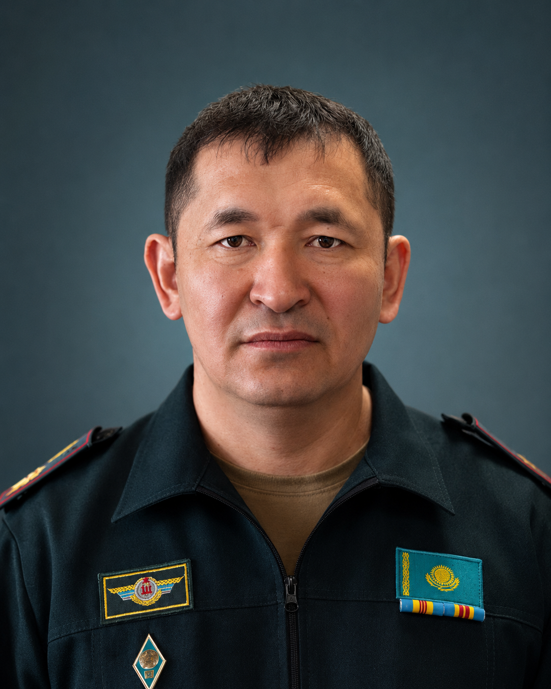
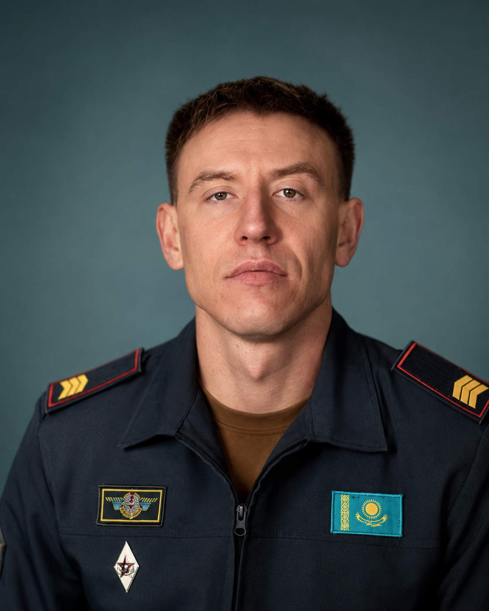
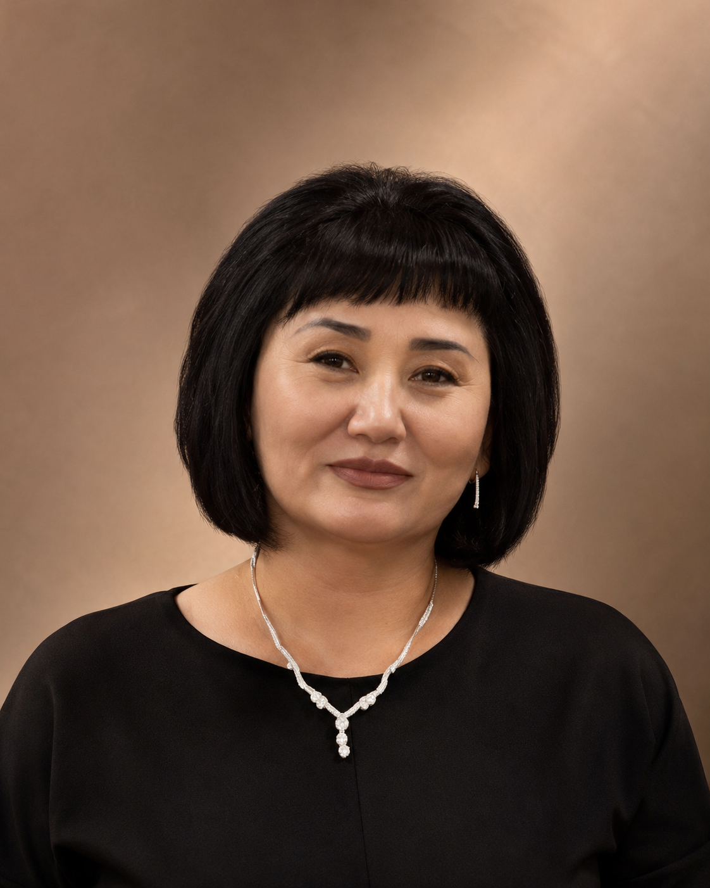
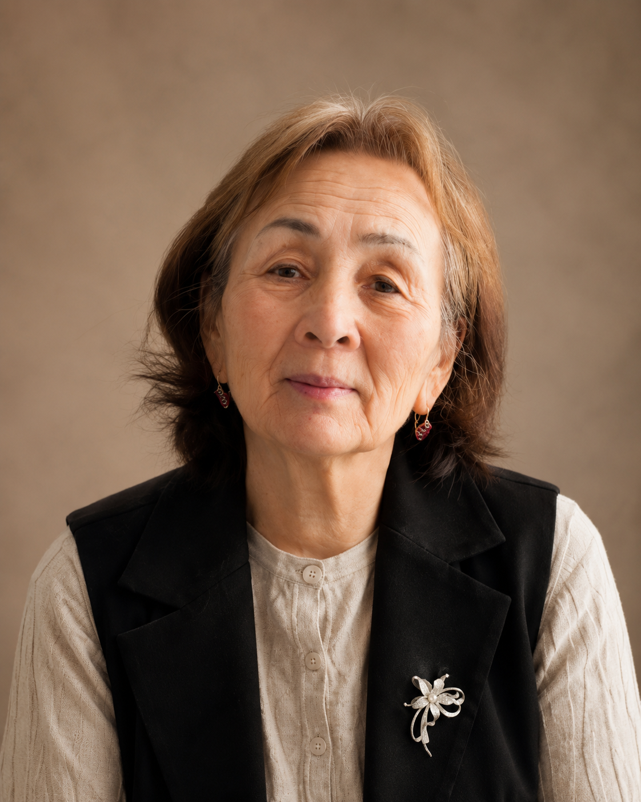
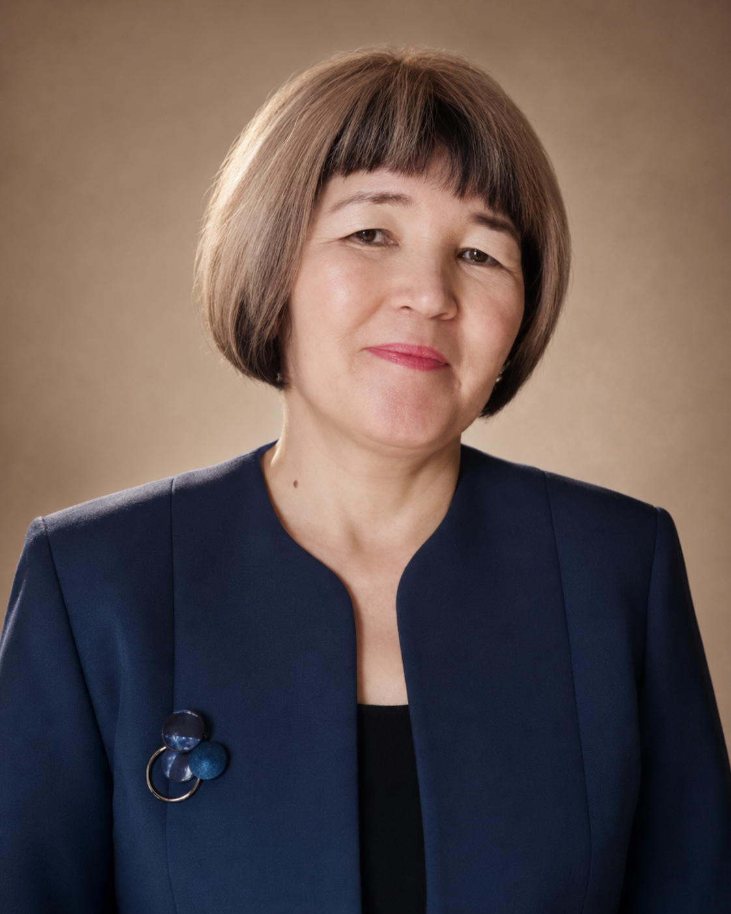

1996 год
Образование цикла общеобразовательных дисциплин
В сентябре 1996 года в Кадетском корпусе был образован цикл общеобразовательных дисциплин, который стал основой гуманитарной и языковой подготовки кадетов.
Военный колледж МО РК
Цикл гуманитарных и общеобразовательных дисциплин является важным учебно-методическим подразделением Военного колледжа Министерства обороны Республики Казахстан. Его деятельность направлена на формирование у кадетов языковой, гуманитарной, гражданской и профессиональной компетентности.
Преподаватели цикла обеспечивают качественную подготовку по дисциплинам гуманитарного и общеобразовательного направлений, воспитывают патриотизм, культуру речи, ответственность, уважение к истории, традициям и ценностям Республики Казахстан.
О цикле
Цикл гуманитарных и общеобразовательных дисциплин координирует преподавание предметов, которые развивают мышление, языковую грамотность, правовую и историческую культуру, а также поддерживают воспитание патриотизма, ответственности и уважения к службе.
На занятиях кадеты изучают дисциплины языкового, гуманитарного, социального и общеобразовательного направлений. Особое внимание уделяется развитию коммуникативных навыков, умению грамотно выражать свои мысли, анализировать информацию, работать с текстами, выступать перед аудиторией и применять полученные знания в профессиональной деятельности.
Деятельность цикла сочетает учебную, методическую, воспитательную и военно-патриотическую работу. Это позволяет формировать у кадетов не только теоретические знания, но и личностные качества, необходимые будущему защитнику Отечества.
История
Цикл гуманитарных и общеобразовательных дисциплин ведёт свою историю с сентября 1996 года, когда в Кадетском корпусе был образован цикл общеобразовательных дисциплин. С первых лет своего существования он стал важной частью образовательной системы учебного заведения, обеспечивая подготовку кадетов по языковым, гуманитарным, социальным и общеобразовательным направлениям.
В разные годы руководство циклом осуществляли офицеры и педагоги, внёсшие вклад в его становление и развитие. История цикла отражает не только развитие образовательной работы, но и усиление гуманитарной подготовки в системе военного образования.
В сентябре 1996 года в Кадетском корпусе был образован цикл общеобразовательных дисциплин, который стал основой гуманитарной и языковой подготовки кадетов.
У истоков становления цикла стояли опытные педагоги, чьи профессионализм, педагогический опыт и преданность делу заложили основу учебно-воспитательного процесса и дальнейшего развития гуманитарного направления.
В последующие годы цикл общеобразовательных дисциплин был преобразован в цикл гуманитарных и общеобразовательных дисциплин. Это изменение отразило расширение содержания образовательной работы и усиление роли гуманитарной подготовки в формировании личности будущего военнослужащего.
Сегодня цикл гуманитарных и общеобразовательных дисциплин продолжает развиваться, обеспечивая гуманитарную, языковую и общеобразовательную подготовку кадетов, формируя культуру речи, патриотизм и профессиональную компетентность.
Н.М. Пилипенко, М.К. Космагамбетова, Ф.С. Сосновская, Т.Н. Максимова, Е.В. Рождественская, А.Г. Каримова, Ю.Ж. Крыкбесов и другие преподаватели.
Первым заведующим циклом общеобразовательных дисциплин был Крыкбесов Юсуф Жагипарович. Первым начальником цикла гуманитарных и общеобразовательных дисциплин стал майор Асанов Кайрат Амангельдинович. В последующий период циклом руководил подполковник Милиди Константин Иванович.
Дисциплины
На разных этапах развития цикл обеспечивал преподавание дисциплин гуманитарного, языкового, социального и общеобразовательного направлений.
Дисциплины цикла направлены на развитие общей культуры кадетов, формирование грамотной устной и письменной речи, расширение кругозора, развитие критического мышления и подготовку к профессиональному общению в военной среде.
Дисциплины цикла направлены на развитие общей культуры кадетов, формирование грамотной устной и письменной речи, расширение кругозора, развитие критического мышления и подготовку к профессиональному общению в военной среде.
Преподаватели
В этом разделе можно разместить фотографии преподавателей цикла, краткие биографии, квалификацию, педагогический стаж и перечень преподаваемых дисциплин. Ниже сохранён удобный формат карточек, который можно заполнить реальными данными.

01 Военная педагогикаОбразование: Жетисуский государственный университет имени Ильяса Жансугурова, бакалавр по специальности «Педагогика и психология», г. Талдыкорган; университет имени Абая Мырзахметова, магистр по специальности «Педагогика и психология», г. Кокшетау.
Дисциплины: военная педагогика и психология, военная этика.

02 ЛингвистикаКраткая биография: образование, педагогический стаж, квалификационная категория, научно-методические интересы и основные направления работы.
Дисциплины: руководство циклом, методическая работа, гуманитарные дисциплины
Здесь можно указать профессиональный путь преподавателя, участие в методической работе, результаты кадетов и основные формы учебной деятельности.
Дисциплины: казахский язык, профессиональный казахский язык
Подходит для информации о повышении квалификации, авторских материалах, языковых компетенциях и внеаудиторной работе с обучающимися.
Дисциплины: английский язык, профессиональный английский язык

05 Казахский языкВ этом блоке удобно показать педагогическое кредо, достижения, участие в воспитательных мероприятиях и работу по военно-патриотическому направлению.
Дисциплины: история Казахстана, всемирная история, философия
Краткая информация о преподавателе.
Дисциплины: английский язык
Образование: Южно-Казахстанский государственный педагогический институт имени Өзбекәлі Жәнібеков, бакалавр, 2013 год. Методическая проблема: использование современных информационных технологий и интерактивных методов обучения для развития логического мышления, технических навыков и познавательной активности обучающихся.
Дисциплины: информатика, физика, графика и проектирование.

08 МатематикаОбразование: Кокчетавский педагогический институт, физико-математический факультет, специальность «Математик», 1974 год. Методическая проблема: дифференцированный подход на уроках математики.
Дисциплина: математика.

09 Казахский языкОбразование: Кокшетауский университет имени Ш. Уалиханова, 2006 год. Квалификация: учитель казахского языка и литературы. Методическая проблема: повышение учебной грамотности кадетов через использование информационно-коммуникативных технологий при обучении казахскому языку и литературе.
Дисциплины: казахский язык и литература.
Образование: высшее, программист-экономист. Методическая проблема: индивидуальный дифференцированный подход на уроках информатики.
Дисциплины: информатика, логика.
Традиции
Особое место в истории цикла занимает развитие педагогического сотрудничества и активных методов обучения. Эти подходы сохранили актуальность и сегодня, поскольку современное военное образование требует активности, самостоятельности и осознанного отношения к обучению.
Преподаватели цикла выстраивают занятия как совместную работу: помогают кадетам задавать вопросы, обсуждать материал, аргументировать свою позицию и применять знания на практике.
Такой подход превращал кадета из пассивного слушателя в активного участника учебного процесса, а преподавателя — в организатора совместной познавательной деятельности.
Память о преподавателях, внёсших вклад в становление цикла, бережно сохраняется в истории учебного заведения. Их труд и профессионализм остаются примером для нынешнего поколения преподавателей и кадетов.
Традиции педагогического мастерства и современный подход к обучению.
Деятельность
Деятельность цикла объединяет учебную, методическую, воспитательную и военно-патриотическую работу. Каждый из этих блоков направлен на формирование знаний, ценностей и профессиональных качеств будущего военнослужащего.
Преподаватели цикла проводят занятия по гуманитарным и языковым дисциплинам, используют современные методы обучения, интерактивные формы работы, практические задания, обсуждения, презентации и индивидуальную работу с кадетами.
Цикл уделяет большое внимание совершенствованию методики преподавания, разработке учебных материалов, обновлению содержания занятий и внедрению современных педагогических технологий в образовательный процесс.
Воспитательная деятельность цикла направлена на формирование патриотизма, гражданской ответственности, уважения к воинскому долгу, культуре, истории и традициям Республики Казахстан.
Через гуманитарные дисциплины кадеты знакомятся с историей государства, воинскими традициями, примерами мужества, дисциплины и служения Отечеству. Это способствует формированию ценностных ориентиров будущего военнослужащего.
Достижения
С развитием учебного заведения укреплялась и материально-техническая база цикла. Учебные кабинеты оснащались современным оборудованием, интерактивными средствами обучения, учебной и методической литературой.
Оснащение кабинетов и наличие современных средств обучения позволяют поддерживать высокий уровень наглядности, практической работы и методического сопровождения занятий.
Это способствует повышению качества занятий, развитию познавательной активности кадетов и их успешному участию в олимпиадах, конкурсах и предметных мероприятиях различного уровня.
Кадеты, обучающиеся по дисциплинам цикла, принимают участие в районных, областных и республиканских предметных олимпиадах, интеллектуальных конкурсах, открытых занятиях, конференциях и воспитательных мероприятиях.
Цикл сегодня
Сегодня цикл гуманитарных и общеобразовательных дисциплин продолжает выполнять важную образовательную и воспитательную миссию. Его деятельность направлена на подготовку грамотных, ответственных, патриотически воспитанных и профессионально ориентированных кадетов.
Преподаватели цикла стремятся не только дать знания по учебным дисциплинам, но и сформировать у обучающихся культуру мышления, умение выражать свою позицию и работать с информацией.
Гуманитарная подготовка помогает будущему военнослужащему уважать историю и традиции своей страны, осознавать гражданскую ответственность и развивать профессиональную культуру общения.
Цикл гуманитарных и общеобразовательных дисциплин сохраняет преемственность педагогических традиций и одновременно развивается в соответствии с современными требованиями военного образования.